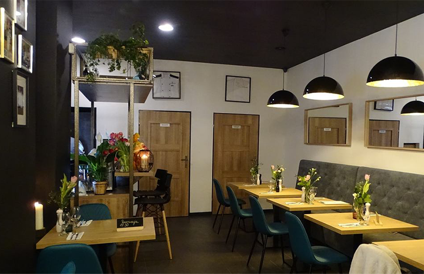
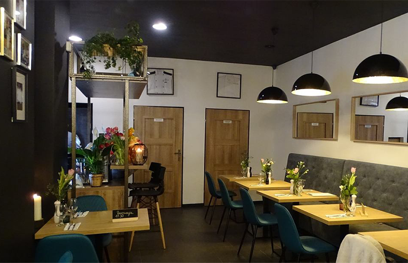

Zapraszamy!
Najlepsza restauracja, która prowadzi znany
twórca internetowy Paei100!

O autorze
Piotr Oginski, czolowy kucharz
polskiego YouTube znany przede
wszystkim ze swojego kanalu i
bloga pod ta sama nazwa:
“Kocham Gotowac”. W swojej
kuchni pokazuje najciekawsze
przepisy na wszelkie mozliwe
dania.
O nas
W Kocham Gotować znajduje sie
otwarta kuchnia, dzieki ktorej
goscie moga podgladć prace
kucharzy. Zjecie tu proste dania
ze swiezych składników!
 
